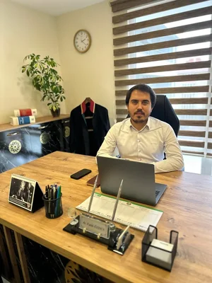

The shaking of the foundation of the marital union can push couples to a divorce decision. With the increasing population in Cerkezkoy, Kapakli, and Saray regions, the density of cases in Family Courts has also increased.
Divorce proceedings in Çerkezköy cover both contested and uncontested divorce types, child custody rights, and alimony calculations. This guide explains the processes at Çerkezköy Family Court and the advantages of working with a lawyer.
The divorce process can be wearing for the parties both emotionally and financially. In this guide, we have compiled how you can manage the process without losing rights and the functioning at the Cerkezkoy Courthouse.
1. What are the Types of Divorce Cases?
According to the Turkish Civil Code, divorce cases are examined under two main headings in terms of procedure and results. Which way you choose determines the speed of the process.
A) Uncontested Divorce Case
This is the method that ends the process fastest. It is usually concluded in a single session. However, the conditions sought by the law for this are:
- The marriage must have lasted at least 1 year.
- Spouses must apply to the court together or one spouse must accept the lawsuit filed by the other.
- It is mandatory for the parties to personally declare their will to divorce before the judge.
- Protocol Requirement: A complete agreement must be reached on custody, alimony, compensation, and property division.
B) Contested Divorce Case
These are situations where the parties cannot agree on divorce or the consequences of divorce (children, money, property). These lawsuits take longer and require proof.
Rec sons for contested divorce are:
- Special Reasons for Divorce: Adultery, attempt on life, maltreatment or insulting behavior, committing a crime and leading a dishonorable life, desertion, mental illness.
- General Reasons for Divorce: Shaking of the foundation of the marital union (commonly known as severe incompatibility).
2. Custody and Alimony Processes
The most sensitive issue of divorce is the situation of children. The judge of the Cerkezkoy Family Court considers the "best interest of the child" rather than the parents' wishes when making a custody decision. The child's age, education status, and the parents' living standards are decisive.
Types of Alimony:
3. Where is the Divorce Case Filed in Cerkezkoy?
The competent courts in divorce cases are:
- The court of the place of residence of one of the spouses.
- The court of the place where they have lived together for the last six months before the lawsuit.
If you reside in the Cerkezkoy, Kapakli, or Kizilpinar region, your case will be heard at the Family Courts in the Cerkezkoy Courthouse.
Property Division Case is Separate!
There is a point that our citizens frequently confuse: Divorce case and property division case are
technically separate lawsuits.
The liquidation of the property regime (participation in acquired property) lawsuit is not concluded
before the divorce decision becomes final. Although it is usually requested together with divorce,
the court makes the divorce decision a "preliminary issue".
Why an Expert Attorney?
Lawsuits filed with ready-made petitions found on the internet may be rejected due to procedural errors or lead to loss of rights.
Professional support is essential especially for determining compensation amounts and presenting evidence (WhatsApp records, hotel records, witness statements) in accordance with the law.

Atty. Fatih Özden
Marmara University Faculty of Law Graduate | Expert Mediator
Attorney Fatih Özden operates his law office across from Çerkezköy Courthouse, specializing in family law, employment law, criminal defense, and mediation. He provides legal representation and expert mediation services in Çerkezköy, Kapaklı, and Saray regions.